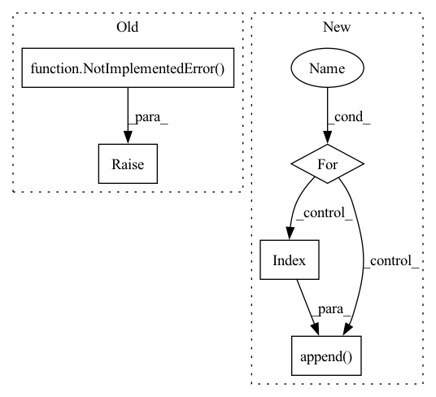

Pattern ID :10819
Before Change
output_weights <list<torch.Tensor>>:
output_biases <list<torch.Tensor>>:
raise NotImplementedError()
class ControlConvNet(nn.Module):
def __init__(self, channels, out_channels, kernel_size, stride=None, dilated=False, separable=False, nonlinear="relu", dropout=False, norm=False):
After Change
output_weights, output_biases = [], []
for idx, _ in enumerate(out_channels):
x_weights = self.fc_weights[idx](x)
x_biases = self.fc_biases[idx]( x)
output_weights.append(x_weights)
output_biases.append( x_biases)
return output_weights, output_biases
class ControlStackedDenseBlock(nn.Module):In pattern: SUPERPATTERN
Frequency: 3
Non-data size: 5
Instances Fragment ID: 37340749
Project Name: tky823/dnn-based_source_separation
Commit Name: ef24a393e941b1563617f711a1438b31488a1df3
Time: 2021-06-08
Author: 40362510+tky823@users.noreply.github.com
File Name: src/models/cunet.py
M Class Name: ControlDenseNet
N Class Name: ControlDenseNet
M Method Name: forward(2)
N Method Name: forward(2)
M Parent Class: nn.Module
N Parent Class: nn.Module
M File Name: src/models/cunet.py
N File Name: src/models/cunet.py
M Start Line: 347
M End Line: 347
N Start Line: 357
N End Line: 369
Before Change
len is equal to the batch size, the second len is equal to the top_k and the third len is equal to the respective
number of classes for the child FC.
raise NotImplementedError()
class FlowDictDecorator(nn.Module):
After Change
n = len(features)
parent_indices = parent_flow_dict.activated.argsort(dim=1)[:, :self.top_k]
res = []
for i in range(n):
res_for_parent = []
for parent_index in parent_indices[i]:
res_for_parent.append( self.fcs[parent_index]( features[i:i+1]))
res.append(res_for_parent)
return res
Fragment ID: 37340751
Project Name: hristo-vrigazov/dnn.cool
Commit Name: 3782b44e17cff0a1bc35747df9fe88b4bfac72c3
Time: 2020-06-28
Author: hvrigazov@gmail.com
File Name: dnn_cool/modules.py
M Class Name: NestedFC
N Class Name: NestedFC
M Method Name: forward(3)
N Method Name: forward(3)
M Parent Class: nn.Module
N Parent Class: nn.Module
M File Name: dnn_cool/modules.py
N File Name: dnn_cool/modules.py
M Start Line: 70
M End Line: 70
N Start Line: 71
N End Line: 79
Before Change
raise NotImplementedError("Implement D3Net")
def forward(self, input):
raise NotImplementedError( "Implement D3Net")
class D3Block(nn.Module):
def __init__(self, in_channels, out_channels, kernel_size, num_blocks=3, depth=None, eps=EPS):
super().__init__()After Change
stacked.append(input)
for idx in range(self.num_d3blocks):
if idx != 0:
x = torch.cat(stacked, dim=1)
x = self.net[idx]( x)
stacked.append( x)
output = torch.cat(stacked[1:], dim=1)
return output Fragment ID: 37340754
Project Name: tky823/dnn-based_source_separation
Commit Name: 08ed4eac522e740d5bb22e99fb4f60bd3f8aadf1
Time: 2021-03-12
Author: 40362510+tky823@users.noreply.github.com
File Name: src/models/d3net.py
M Class Name: D3Net
N Class Name: D3Net
M Method Name: forward(2)
N Method Name: forward(2)
M Parent Class: nn.Module
N Parent Class: nn.Module
M File Name: src/models/d3net.py
N File Name: src/models/d3net.py
M Start Line: 24
M End Line: 24
N Start Line: 59
N End Line: 72